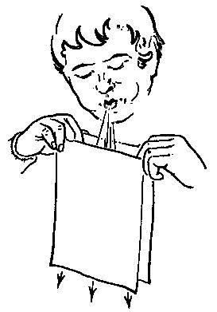
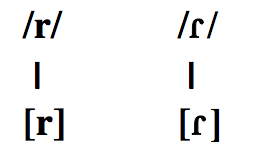
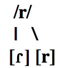
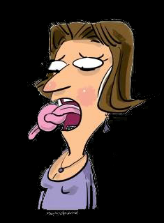

Fonética y español oral
Las vibrantes y la entonación
Joseph V. Casillas
Instituto Franklin: otoño 2015
Fito
Fito
Buscad...
- Tres ejemplos de sonorización
- Tres ejemplos de fricitivización
- Tres ejemplos en los que la fricativización se bloquee debido a la presencia de una nasal
- Una nasal dental
- Una nasal velar
- Una nasal interdental
- Una lateral interdental
Las vibrantes (cont.)
Las vibrantes

Hay 2 fonemas vibrantes del español
- /ɾ/: vibrante simple, alveolar, sonora
- /r/: vibrante múltiple, alveolar, sonora
Las vibrantes
- Son fonemas en posición intervocálica
- Hay pares mínimos
| Palabra | Transcripción | |
|---|---|---|
| 'coro/corro' | /ˈko.ɾo/ /ˈko.ro/ | |
| 'pero/perro' | /ˈpe.ɾo/ /ˈpe.ro/ | |
| 'caro/carro' | /ˈka.ɾo/ /ˈka.ro/ |
Las vibrantes
Cada fonema tiene un alófono

Las vibrantes
¡OJO!
- En otras posiciones no hay distinción fonémica
- Se trata de un fonema con dos alófonos

Las vibrantes - Distribución de alófonos...
[ɾ]
- En un
ataque complejo (ataque compuesto de dos consonantes)- 'broma' [ˈb
ɾ o.ma] - 'tren' [t
ɾ en] - 'dragón' [d
ɾ a.ˈɣon]
- 'broma' [ˈb
Las vibrantes - Distribución de alófonos...
[r]
- A principio de palabra
- 'rosa' [ˈro.sa]
- 'rojo' [ˈro.xo]
- 'roto' [ˈro.to]
- A principio de sílaba después de /l/, /n/ o /s/
- 'alrededor' [al.re.ðe.ˈðoɾ]
- 'Enrique' [en.ˈri.ke]
- 'Israel' [is.ra.ˈel]
Las vibrantes - Distribución de alófonos...
[ɾ] / [r] (opcional)
- En posición de coda, o posición enfática
- 'dar' [da
ɾ ]/[dar] - 'harto' [a
ɾ .to]/[ar.to] - 'hace un calorrr' [ka.ˈlo
ɾ ]/[ka.ˈlor]
- 'dar' [da
Las vibrantes - Pronunciación
/r/ inglés (/ɚ, ɝ, ɹ)
- Es una aproximante ('aproximant')
- La lengua no toca los alvéolos
- La punta de la lengua se vuelve hacia atrás ('retroflex')
/ɾ/ español
- Se aproxima más al sonido de 'Peter', 'pretty', 'ladder'
/r/ español
- Como el ruido que hacen los niños cuando juegan a los 'GI Joes'
GI Joe
Las vibrantes
El efecto Bernoulli
